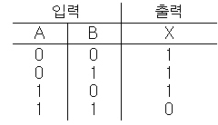
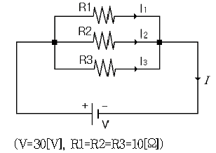
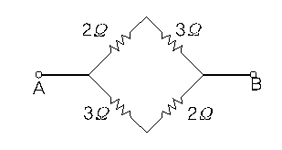

정보기기운용기능사 (2006-04-02 기출문제)
1과목: 전산 기초 이론
1. 다음 보기의 진리표에 해당되는 논리회로는?

- AND 회로
- NOR 회로
- NAND 회로
- OR 회로
(정답률: 71%)

2. 16진수 27D를 10진수로 변환하면 얼마인가?
- 237
- 357
- 637
- 897
(정답률: 77%)
3. 집적회로(Integrated circuit)를 기본소자로 사용한 전자계산기의 세대는?
- 1세대
- 2세대
- 3세대
- 4세대
(정답률: 83%)
4. 입력장치와 출력장치로 올바르게 짝지은 것은?
- 입력장치, Scanner, 출력장치, OCR
- 입력장치, Printer, 출력장치, X-Y Plotter
- 입력장치, OCR, 출력장치, X-Y Plotter
- 입력장치, 디지타이저, 출력장치, Scanner
(정답률: 75%)
5. 반가산기(half adder)는 어떤 회로의 조합인가?
- AND와 OR회로
- AND와 NOT회로
- EX-OR와 AND회로
- EX-OR와 OR회로
(정답률: 58%)
6. 다음 중 프로그램 작성 단계에서 어떠한 데이터를 어떻게 입력하여, 처리 결과를 어떻게 출력할 것인지를 결정하는 단계는?
- 순서도 작성 단계
- 문제 분석 단계
- 프로그램 번역 단계
- 입·출력 설계 단계
(정답률: 76%)
7. 다음 설명 중 옳지 않은 것은?
- interpreter는 원시프로그램을 번역한다.
- interpreter는 목적프로그램을 생산한다.
- compiler는 목적프로그램을 생산한다.
- compiler는 원시프로그램을 번역한다.
(정답률: 59%)
8. 중앙처리 장치의 주요 기능이라고 할 수 없는 것은?
- 정보의 기억
- 정보의 연산
- 처리기능의 제어
- 오퍼레이터와의 대화(MMI)
(정답률: 81%)
9. 컴퓨터 및 데이터 통신에 널리 쓰이는 ASCII 코드는 몇 Bit로 구성되는가? (단, 패리티 비트 제외)
- 4
- 7
- 8
- 9
(정답률: 75%)
10. 다음 중 컴퓨터를 교육의 도구로 활용하는 시스템은 무엇인가?
- CAM(Computer Aided Manufacturing)
- CAI(Computer Aided Instruction)
- FMS(Flexible Manufacturing System)
- CAD(Computer Aided Design)
(정답률: 67%)
2과목: 정보 기기 운용
11. 기억된 정보의 변경 필요성이 없거나 갱신의 빈도가 작은 정보를 기억시켜 놓고 읽어내는 데만 사용하는 메모리는?
- ROM
- RAM
- SAM
- ISAM
(정답률: 82%)
12. 아래 그림에서 전체전류(I)를 바르게 구한 것은?

- 3[A]
- 6[A]
- 9[A]
- 12[A]
(정답률: 51%)
13. 국내에서 개발한 교환기로서 시내 및 시외용으로 사용되며 완전 분산 제어방식을 채택한 교환기는?
- S-1240
- AXE-10
- TDX-10
- NO.4 ESS
(정답률: 77%)
14. 다음 중 컴퓨터 이용 설계 정보로 생산준비, 생산, 공정설계 등 조립에서 공정까지 추진되는 기술은?
- CAD
- CAM
- CAI
- CMI
(정답률: 54%)
15. 컴퓨터 바이러스 예방 수칙과 거리가 먼 것은?
- 불법 복제 소프트웨어는 사용하지 않는다.
- 바이러스가 감염된 파일을 백업해 둔다.
- 백신 프로그램을 수시로 갱신한다.
- 신종 바이러스에 대한 예방법을 자세히 알아둔다.
(정답률: 85%)
16. 다음 그림의 A - B간 합성저항은?

- 12Ω
- 10Ω
- 5Ω
- 2.5Ω
(정답률: 60%)
17. 다음 중 다중방송의 기능을 갖는 것은?
- 텔렉스
- 텔레텍스
- 텔레텍스트
- 비디오텍스
(정답률: 53%)
18. 도체에 5[A]의 전류가 1분간 흘렀다. 이때 도체를 통과한 전기량은 얼마인가?
- 5[C]
- 30[C]
- 50[C]
- 300[C]
(정답률: 80%)
19. 주파수(frequency)에 대한 설명 중 틀린 것은?
- 1초 동안에 반복하는 사이클 발생 수를 나타낸다.
- 단위는 초[sec]를 사용한다.
- 주기와는 역수 관계이다
- 교류전류, 전파, 음성 등에 사용된다.
(정답률: 71%)
20. 사무자동화의 궁극적 목적으로 적합하지 않은 것은?
- 최적화된 시스템 구축
- 사무실 무인화 시스템 구축
- 조직의 경쟁력 강화
- 사무부분의 생산성 향상
(정답률: 54%)
21. 방화벽(fire wall)의 구성요소에 해당되지 않는 것은?
- IP주소
- 프록시 서버
- 베스천 호스트
- 스크린 라우터
(정답률: 62%)
22. 순간 정전에 대비하여 밧데리 장치를 갖추어 정전이 되어도 일정 시간 동안 전압을 공급해 주는 장치는?
- UPS
- EMI
- AVR
- CAR
(정답률: 81%)
23. 다음 중 MODEM의 뜻은?
- 복조와 단말장치
- 인쇄와 전송장치
- 변조와 복조장치
- 변조와 단말장치
(정답률: 80%)
24. 정보기기의 운용 및 보존 관리를 위한 작업 계획 시 고려할 사항이 아닌 것은?
- 회선이나 시설의 불량상태
- 계절적, 환경적인 특수 사항
- 운용 보존 요원의 경제 수준
- 가동 시설 수와 시설의 확충 계획
(정답률: 77%)
25. 다음 중 유선방송(CATV)전송에 가장 적합한 전송선로는?
- 국내케이블
- 지절연케이블
- 동축케이블
- 강대외장케이블
(정답률: 86%)
26. 다음 중 컴퓨터를 설치할 때 고려할 사항과 관계가 먼 것은?
- 정전에 대한 대책
- 안정된 전압공급
- 온도 및 습도의 조절
- 스프링클러 설치 수량
(정답률: 80%)
27. 자기잉크를 사용하여 문자를 나타내는 방법으로 은행의 수표처리 등에 널리 이용되는 입력 매체는?
- BAR CODE
- OCR
- OMR
- MICR
(정답률: 71%)
28. MFC식 전화기의 버튼을 이용하여 조회 코드를 입력시 음성합성장치에서 데이터를 음성으로 변환하여 들려주는 시스템은?
- ARS
- CRT
- POS
- TELETEXT
(정답률: 66%)
29. 컴퓨터의 처리능력을 나타내는 단위로서 1초 동안에 몇 개의 명령이 실행 가능한지를 나타내는 단위는?
- CPI
- OSI
- MIPS
- DBMS
(정답률: 61%)
30. 1.5[V] 건전지 4개를 병렬 연결하였을 때 전압은 몇 [V]인가?
- 1.5[V]
- 3[V]
- 4.5[V]
- 6[V]
(정답률: 77%)
3과목: 정보 통신 일반
31. 다음 중 광통신시스템의 가장 적절한 구성은?
- 송신부 - 전광변환 - 광섬유 - 광전변환 - 수신부
- 발광부 - 음성전환 - 중계부 - 음성변환 - 수광부
- 부호부 - 표본화 - 전송부 - 양자화 - 복호부
- 음성 - 전기신호 - 전광변환 - 광신호 - 음성
(정답률: 82%)
32. CATV의 설명으로 적절하지 못한 것은?
- 케이블 TV라고도 한다.
- 기존 아날로그 TV 방송보다 채널수가 많다.
- 헤드엔드가 핵심 구성요소이다.
- 가입자 댁내설비는 MFC 전화기이다.
(정답률: 76%)
33. 정보의 배치(Batch)처리방식에 대하여 가장 적합하게 설명한 것은?
- 처리 요구나 데이터가 발생 즉시 하나씩 처리하는 방식
- 몇 개의 일(데이터)을 모아 전자계산기에 입력하고 제어 프로그램에 의해 연속 처리하는 방식
- 다수의 이용자가 동일 전자계산기를 이용하여 동시에 처리하는 방식
- 처리 요구 또는 데이터가 발생하는 곳에서 바로 통신 회선에 접속하여 입·출력 처리하는 방식
(정답률: 64%)
34. 메시지교환방식에 대한 가장 적합한 설명은?
- 각 지역에서 발생한 데이터를 중앙에서 처리하여 각 지역으로 보내는 시스템이다.
- 데이터 전송회선을 통해 들어온 전문을 상대방 회선에 즉시 혹은 지연시간을 가지고 보내주는 시스템이다.
- 대용량의 기억장치에 최신의 정보를 기억해두고 단말장치에서 질문하면 응답하는 시스템이다.
- 단말장치에서 입력된 데이터를 즉시 처리하여 그 결과를 즉시 단말장치에 보내는 시스템이다.
(정답률: 53%)
35. PAD의 변수(Parameter)를 규정하고 있는 ITU-T 권고는?
- X.25
- X.3
- X.28
- X.29
(정답률: 60%)
36. 다음 중 PCM 통신방식의 수신측에서 이루어지는 과정은?
- 복호화
- 양자화
- 부호화
- 표본화
(정답률: 69%)
37. 일정한 폭을 가진 한 통신선로의 주파수 대역폭을 여러개 작은 대역폭으로 나누어 전송하는 방식은?
- 시분할다중화방식
- 주파수분할다중화방식
- 선로스위칭다중화방식
- 코드분할다중화방식
(정답률: 76%)
38. 데이터통신 시스템의 기본 구성요소로 짝지어진 것은?
- 데이터신호계와 처리계
- 데이터전송계와 처리계
- 데이터생산계와 분배계
- 데이터가공계와 응용계
(정답률: 84%)
39. 수신측에서 에러가 발생한 비트를 찾아 재전송을 요구하지 않고 자신이 직접 에러를 수정하는 방식은?
- go-N-back ARQ
- 정지-대기 ARQ
- 선택적 재전송 ARQ
- 전진에러수정(FEC)
(정답률: 73%)
40. 8위상 변조방식(8-PSK)을 사용한 변복조장치에서 신호전송속도가 3200보오(Baud)이다. 이 변복조 장치가 전송하는 정보는 몇(bps)에 해당하는가?
- 3200
- 6400
- 9600
- 12800
(정답률: 68%)
41. 전리층을 이용하는 라디오 방송에서 주로 이용하는 전파의 종류는?
- 장파
- 중파
- 단파
- 초단파
(정답률: 56%)
42. EIA의 RS-232C 접속 케이블의 25핀 컨넥터에서 송신데이터 신호의 핀 번호는?
- 1
- 2
- 3
- 4
(정답률: 77%)
43. 다음 중 원통형의 중심도체와 외부도체로 이루어져 있고 그 사이에는 절연물질로 채워져 있는 구조의 케이블은?
- 폼스킨 케이블
- 동축 케이블
- 쌍대 케이블
- 국내 케이블
(정답률: 86%)
44. 다음 중 정보의 처리가 가장 신속하도록 구성한 데이터 통신시스템은?
- 실시간 시스템(Real Time System)
- 오프-라인 시스템(Off-Line System)
- 축적 후 전진시스템(Store And Forward System)
- 배치처리 시스템(Batch Process System)
(정답률: 86%)
45. 다음 중 디지털 동화상을 압축하는 기법은?
- JPEG
- Hypertext
- PCS
- MPEG
(정답률: 67%)
46. 신호의 전송 중에 발생하는 주파수 감쇠 왜곡과 전송지연왜곡을 방지하기 위해 모뎀에서 갖는 회로는?
- 궤한회로
- 고주파회로
- 등화회로
- 저주파회로
(정답률: 68%)
47. 다음 중 데이터 통신의 설명으로 가장 적절한 표현은?
- 기계와 기계 사이의 모든 자료를 전달하는 수단
- 컴퓨터와 컴퓨터, 컴퓨터와 단말장치 간에 2진 신호방식을 이용하여 정보를 송수신하는 통신
- 컴퓨터의 CPU와 주변장치와의 아날로그 신호 교환
- 단말장치와 단말장치 간 음성 메시지를 전송하는 통신
(정답률: 69%)
48. 음성과 비음성을 통합시킨 종합정보통신망은?
- LAN
- ISDN
- PSTN
- VAN
(정답률: 69%)
49. 다음 중 회선효율이 가장 높은 통신방식은?
- 반이중 방식
- 전이중 방식
- 단향 방식
- 회선방식
(정답률: 78%)
50. 실제로 보낼 데이터가 있는 터미널에만 동적인 방식으로 시간 폭을 할당하는 다중화기는?
- 주파수 분할 다중화기(FDM)
- 시분할 다중화기(TDM)
- 통계적 시분할 다중화기(STDM)
- 펄스코드 변조기(PCM)
(정답률: 50%)
4과목: 정보 통신 업무 규정
51. 별정통신사업을 경영하고자 하는 자는 어떤 절차를 밟아야 하는가?
- 정보통신부장관의 허가를 받아야 한다.
- 한국통신사장의 승인을 받아야 한다.
- 한국정보통신공사업협회에 신고하여야 한다.
- 정보통신부장관에게 등록하여야 한다.
(정답률: 60%)
52. 정보통신에서 절대레벨의 표기시 이용되는 단위는?
- dBm
- dB
- Baud
- bps
(정답률: 52%)
53. 통신역무요금의 결정은 어떻게 이루어져야 가장 바람직한가?
- 서비스 원가주의로 최소 염가로 결정하여야 한다.
- 경쟁가격주의로 수익성을 극대화 하도록 하여야 한다.
- 물가공정거래위원회의 심의 결정에 따라야 한다.
- 국내개발 첨단 과학기술 및 기기의 내용
(정답률: 33%)
54. 국외 유출이 제한되는 중요 정보에 속할 수 없는 것은?
- 국가안전보장과 관련된 보안정보
- 국가안전보장과 관련된 주요정책
- 국내 중요 통신사업자의 시스템 통합편람
- 국내개발 첨단 과학기술 및 기기의 내용
(정답률: 60%)
55. 초고속국가망을 구축, 관리하게 하는 전담기관을 누가 지정하는가?
- 한국통신사장
- 기간통신사업자
- 정보화추진위원회
- 정보통신부장관
(정답률: 75%)
56. 정보화를 촉진함에 있어 이용자의 권익보호를 위한 시책이 아닌 것은?
- 건전한 이용을 위한 홍보, 교육 및 연구
- 이용자의 건전한 조직 활동의 지원 및 육성
- 이용자의 프로그램개발의 적극적 참여 유도
- 이용자의 생명·신체 및 재산상의 위해방지
(정답률: 51%)
57. 기간통신사업자로부터 임차한 전기통신회선설비로 제한된 전기통신역무를 제공하는 전기통신사업은?
- 임차통신사업
- 자가통신사업
- 특정통신사업
- 부가통신사업
(정답률: 70%)
58. 정보화촉진기본법의 목적과 관계가 적은 것은?
- 정보통신역무의 효율적 관리
- 정보통신기반의 고도화 실현
- 정보통신산업의 기반 조성
- 국민경제의 발전에 이바지
(정답률: 27%)
59. 정보통신회선의 특성을 시험할 때, 511비트는 무엇을 측정하기 위한 신호인가?
- 편기왜율
- 불규칙왜율
- 블록오율
- 비트오율
(정답률: 55%)
60. 기간통신사업자 및 부가통신사업자의 교환설비로부터 이용자 측 전기통신설비의 최초 단자에 이르기까지의 사이에 구성되는 회선을 무엇이라고 하는가?
- 전선
- 구내선
- 국선
- 중계선
(정답률: 62%)